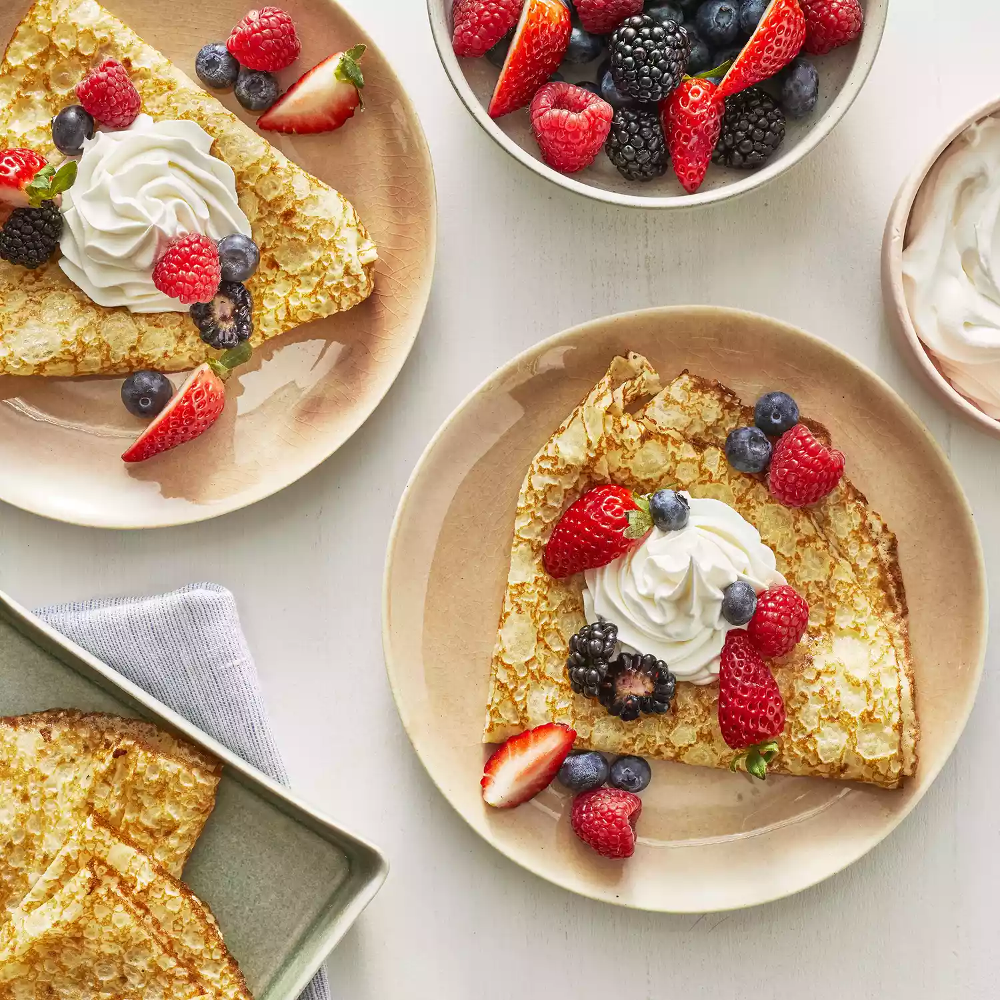

-
Prep Time: 10 mins
-
Cook Time: 20 mins
-
Total Time: 30 mins
-
Servings: 4
-
Yield: 8 crepes
Ingredients
- 1 cup all-purpose flour
- 2 eggs
- ½ cup milk
- ½ cup water
- ¼ teaspoon salt
- 2 tablespoons butter, melted
Directions
-
In a large mixing bowl, whisk together the flour and the eggs.
Gradually add in the milk and water, stirring to combine. Add the
salt and butter; beat until smooth.
-
Heat a lightly oiled griddle or frying pan over medium high heat.
Pour or scoop the batter onto the griddle, using approximately 1/4
cup for each crepe. Tilt the pan with a circular motion so that
the batter coats the surface evenly.
-
Cook the crepe for about 2 minutes, until the bottom is light
brown. Loosen with a spatula, turn and cook the other side. Serve
hot.